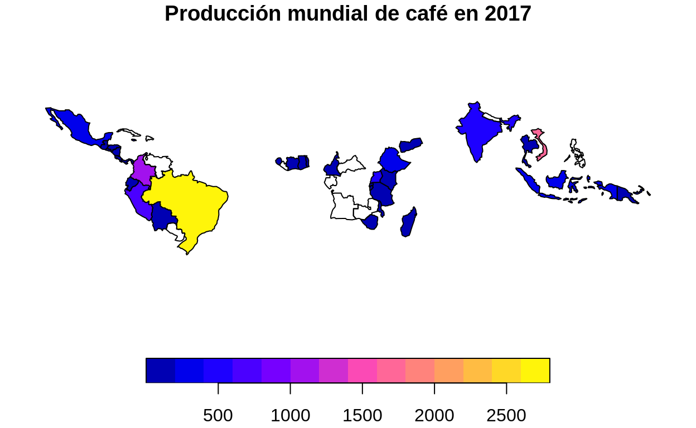
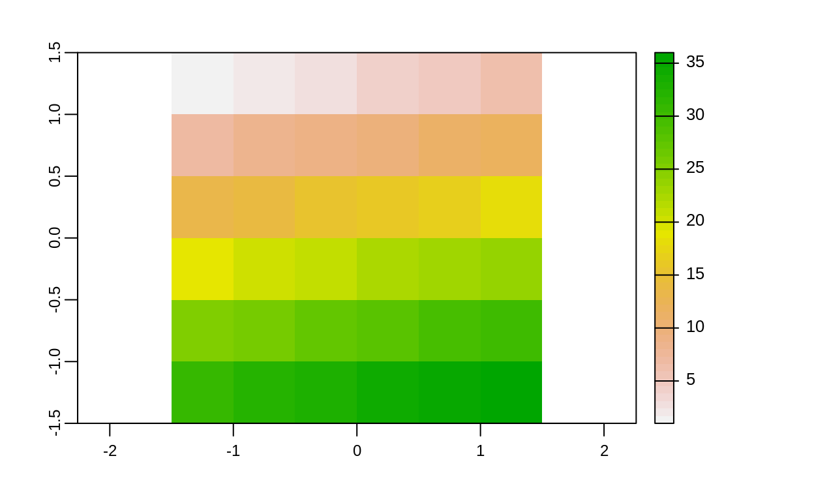
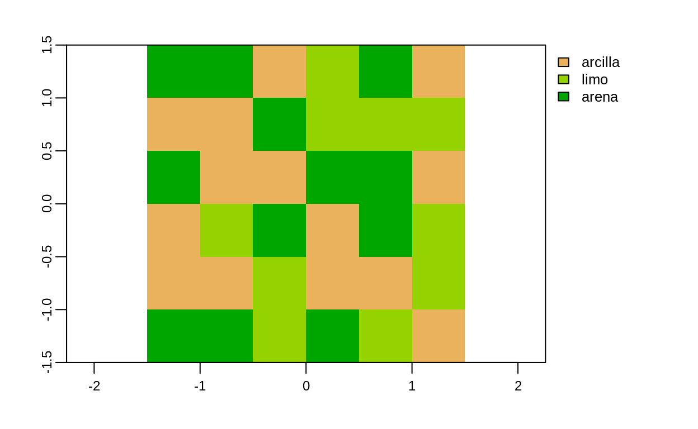

Este documento est estructurado con base en el captulo 3 de Lovelace, R., Nowosad, J. & Muenchow, J. (2020). Geocomputation with R.
Lea el captulo 3 de Lovelace, R., Nowosad, J. & Muenchow, J. (2020). Geocomputation with R.
spData: Datasets for Spatial Analysis (Bivand et al.)
Este paquete contiene conjuntos de datos de ejemplo para el libro Geocomputation with R. Su documentacin est en Datasets for Spatial Analysis - spData.
Se les llama atributos a los elementos de datos no espaciales o geomtricos de un conjunto de datos geogrficos. Estos datos pueden ser de tipos numricos o textuales, entre otros. Un conjunto de datos vectoriales puede tener asociados varios campos de atributos, mientras que un conjunto de datos raster tiene solamente uno.
Las operaciones con atributos en datos vectoriales incluyen:
Seguidamente, se explicar como maneja estas operaciones el paquete sf.
Como se mencion, el paquete sf define una clase, llamada sf, la cual extiende la clase data.frame del paquete base de R. Los objetos de la clase sf tienen una fila (o feature) por cada observacin y una columna por cada atributo. Tambin tienen una columna especial para almacenar las geometras (puntos, lneas, polgonos, etc.), la cual generalmente se denomina geometry o geom. Esto permite que sf utilice mtodos (i.e.funciones) de la clase data.frame, tales como plot() y summary(), entre otros.
Adems de data.frame, sf es compatible con clases como las del paquete tibble, las cuales pueden manipularse mediante los mtodos de dplyr. Esto que permite un manejo tidy (ordenado, organizado) de los datos geoespaciales, de acuerdo con el enfoque de Tidyverse.
En la secciones siguientes, se explicar el manejo de datos de atributos tanto mediante funciones y operaciones del paquete base de R, como mediante Tidyverse.
Las siguientes son algunas de las funciones disponibles para obtener informacin bsica de un objeto sf.
# Clase de cantones
class(cantones)
[1] "sf" "data.frame"# Dimensiones (cantidad de filas y de columnas)
dim(cantones)
[1] 82 11# Cantidad de filas (i.e. observaciones)
nrow(cantones)
[1] 82# Cantidad de columnas (i.e. variables)
ncol(cantones)
[1] 11# Nombres de las columnas
names(cantones)
[1] "gml_id" "gmlid" "cod_catalo" "cod_canton" "canton"
[6] "ori_toponi" "area" "cod_provin" "provincia" "version"
[11] "geometry" La funcin st_drop_geometry() puede ser til cuando, por ejemplo, solo se necesita trabajar con los atributos y la columna con la geometra consume demasiados recursos del computador.
# Remocin de la columna de geometra
cantones_df <- st_drop_geometry(cantones)
# Nombres de las columnas
names(cantones_df)
[1] "gml_id" "gmlid" "cod_catalo" "cod_canton" "canton"
[6] "ori_toponi" "area" "cod_provin" "provincia" "version" # Clase de df_cantones (ntese como no se muestra ya la clase sf)
class(cantones_df)
[1] "data.frame"# Tamao del conjunto de datos original (tipo sf)
print(object.size(cantones), units="Kb")
20420.7 Kb# Tamao del conjunto de datos sin geometras (tipo data.frame)
print(object.size(cantones_df), units="Kb")
42.5 KbPara algunas operaciones, tambin es posible ocultar la columna de geometra de un conjunto de datos (sin borrarla) mediante el argumento drop = TRUE.
# Sin drop = TRUE
cantones[1:10, c("canton", "area")]
Simple feature collection with 10 features and 2 fields
Geometry type: MULTIPOLYGON
Dimension: XY
Bounding box: xmin: 439032.1 ymin: 889175.6 xmax: 658879.5 ymax: 1080261
Projected CRS: CR05 / CRTM05
canton area geometry
1 Corredores 623.61 MULTIPOLYGON (((616552.4 93...
2 Golfito 1753.42 MULTIPOLYGON (((558675.7 96...
3 Coto Brus 944.24 MULTIPOLYGON (((620471.4 97...
4 Osa 1932.03 MULTIPOLYGON (((517638.5 10...
5 Buenos Aires 2382.94 MULTIPOLYGON (((574574.2 10...
6 Prez Zeledn 1901.08 MULTIPOLYGON (((524884 1061...
7 Quepos 557.85 MULTIPOLYGON (((485102 1058...
8 Talamanca 2792.23 MULTIPOLYGON (((621284.1 10...
9 Parrita 483.22 MULTIPOLYGON (((466749.5 10...
10 Tarraz 291.27 MULTIPOLYGON (((501998.9 10...# Con drop = TRUE
cantones[1:10, c("canton", "area"), drop=TRUE]
canton area
1 Corredores 623.61
2 Golfito 1753.42
3 Coto Brus 944.24
4 Osa 1932.03
5 Buenos Aires 2382.94
6 Prez Zeledn 1901.08
7 Quepos 557.85
8 Talamanca 2792.23
9 Parrita 483.22
10 Tarraz 291.27Frecuentemente, es necesario extrer subconjuntos del conjunto de datos original, para facilidad de manejo y para atender requerimientos especficos de un anlisis. En esta seccin, se explican las diferentes opciones para creacin de subconjuntos, tanto con el paquete base de R como con dplyr. En resumen, estas son:
[] y $subset()select()slice()filter()[] y $La notacin de parntesis cuadrados ([]) y el signo de dlar ($) permite crear subconjuntos con base en la posicin de filas y de columnas, por medio de nombres de columnas y a travs de la especificacin de condiciones (i.e.expresiones lgicas).
# Subconjunto especificado por posiciones de filas
cantones[1:10, ]
# Subconjunto especificado por posiciones de columnas
cantones[, 8:10]
# Subconjunto especificado por nombres de columnas
cantones[, c("canton", "area", "provincia")]
Especificacin mediante una condicin (i.e.expresin lgica):
# Cantones de la provincia de Cartago
cantones[cantones$provincia == "Cartago", c("canton", "provincia"), drop = TRUE]
canton provincia
19 El Guarco Cartago
20 Cartago Cartago
22 Paraso Cartago
23 Jimnez Cartago
24 Turrialba Cartago
26 Oreamuno Cartago
29 La Unin Cartago
34 Alvarado CartagoLa funcin subset() tambin retorna un subconjunto cuyos registros cumplen una condicin.
canton area
5 Buenos Aires 2382.94
8 Talamanca 2792.23
70 Pococ 2408.76
71 San Carlos 3352.33
74 Sarapiqu 2144.38Los operadores lgicos y de comparacin que pueden utilizarse en las condiciones de la funcin subset(), y en expresiones lgicas en general, se listan en la siguiente tabla:
| Operador | Descripcin |
|---|---|
| == | igual a |
| != | distinto de |
| >, < | mayor que, menor que |
| >=, <= | mayor o igual que, menor o igual que |
| &, |, ! | Operadores lgicos: y, o, no |
Las funciones del paquete base de R son confiables y ampliamente usadas. Sin embargo, el enfoque ms moderno de dplyr permite flujos de trabajo ms intuitivos y es ms rpido, debido a que se apoya en cdigo escrito en el lenguaje C++. Esto es til, por ejemplo, cuando se trabaja con conjuntos de datos grandes (big data) y cuando se necesita integracin con bases de datos. Las principales funciones de dplyr para creacin de subconjuntos son select(), slice() y filter().
La funcin select() permite seleccionar y renombrar columnas de un conjunto de datos.
# Seleccin de columnas
cantones %>%
select(canton, provincia)
Simple feature collection with 82 features and 2 fields
Geometry type: MULTIPOLYGON
Dimension: XY
Bounding box: xmin: 156152 ymin: 608833.8 xmax: 658879.5 ymax: 1241118
Projected CRS: CR05 / CRTM05
First 10 features:
canton provincia geometry
1 Corredores Puntarenas MULTIPOLYGON (((616552.4 93...
2 Golfito Puntarenas MULTIPOLYGON (((558675.7 96...
3 Coto Brus Puntarenas MULTIPOLYGON (((620471.4 97...
4 Osa Puntarenas MULTIPOLYGON (((517638.5 10...
5 Buenos Aires Puntarenas MULTIPOLYGON (((574574.2 10...
6 Prez Zeledn San Jos MULTIPOLYGON (((524884 1061...
7 Quepos Puntarenas MULTIPOLYGON (((485102 1058...
8 Talamanca Limn MULTIPOLYGON (((621284.1 10...
9 Parrita Puntarenas MULTIPOLYGON (((466749.5 10...
10 Tarraz San Jos MULTIPOLYGON (((501998.9 10...# Seleccin y cambio de nombre de columnas
cantones %>%
select(canton, area_km2 = area, provincia)
Simple feature collection with 82 features and 3 fields
Geometry type: MULTIPOLYGON
Dimension: XY
Bounding box: xmin: 156152 ymin: 608833.8 xmax: 658879.5 ymax: 1241118
Projected CRS: CR05 / CRTM05
First 10 features:
canton area_km2 provincia geometry
1 Corredores 623.61 Puntarenas MULTIPOLYGON (((616552.4 93...
2 Golfito 1753.42 Puntarenas MULTIPOLYGON (((558675.7 96...
3 Coto Brus 944.24 Puntarenas MULTIPOLYGON (((620471.4 97...
4 Osa 1932.03 Puntarenas MULTIPOLYGON (((517638.5 10...
5 Buenos Aires 2382.94 Puntarenas MULTIPOLYGON (((574574.2 10...
6 Prez Zeledn 1901.08 San Jos MULTIPOLYGON (((524884 1061...
7 Quepos 557.85 Puntarenas MULTIPOLYGON (((485102 1058...
8 Talamanca 2792.23 Limn MULTIPOLYGON (((621284.1 10...
9 Parrita 483.22 Puntarenas MULTIPOLYGON (((466749.5 10...
10 Tarraz 291.27 San Jos MULTIPOLYGON (((501998.9 10...slice() es el equivalente de select() para filas. Crea un subconjunto con base en las posiciones de las filas.
# Subconjunto especificado mediante un rango de filas
cantones %>%
slice(1:10)
La funcin filter() es el equivalente en dplyr de la funcin subset() del paquete base. Retorna los registros que cumplen con una condicin.
# Androides de "La Guerra de las Galaxias"
starwars %>%
filter(species == "Droid")
# A tibble: 6 14
name height mass hair_color skin_color eye_color birth_year sex
<chr> <int> <dbl> <chr> <chr> <chr> <dbl> <chr>
1 C-3PO 167 75 <NA> gold yellow 112 none
2 R2-D2 96 32 <NA> white, bl red 33 none
3 R5-D4 97 32 <NA> white, red red NA none
4 IG-88 200 140 none metal red 15 none
5 R4-P17 96 NA none silver, r red, blue NA none
6 BB8 NA NA none none black NA none
# with 6 more variables: gender <chr>, homeworld <chr>,
# species <chr>, films <list>, vehicles <list>, starships <list>Las funciones del paquete dplyr suelen ser utilizadas conjuntamente con el operador pipe (%>%), el cual posibilita el encadenamiento (chaining) de funciones: la salida de la funcin previa se convierte en el primer argumento de la siguiente funcin. En el siguiente ejemplo, el conjunto de datos starwars se pasa como entrada a la funcin filter(), para filtrar los personajes humanos. Seguidamente, el resultado se pasa a la funcin select(), para seleccionar las columnas name, homeworld y species. Finalmente, la funcin slice() reduce el resultado a las 10 primeras filas.
# Encadenamiento de funciones mediante pipes (%>%)
starwars %>%
filter(species == "Human") %>%
select(name, homeworld, species) %>%
slice(1:10)
# A tibble: 10 3
name homeworld species
<chr> <chr> <chr>
1 Luke Skywalker Tatooine Human
2 Darth Vader Tatooine Human
3 Leia Organa Alderaan Human
4 Owen Lars Tatooine Human
5 Beru Whitesun lars Tatooine Human
6 Biggs Darklighter Tatooine Human
7 Obi-Wan Kenobi Stewjon Human
8 Anakin Skywalker Tatooine Human
9 Wilhuff Tarkin Eriadu Human
10 Han Solo Corellia Human Una alternativa al uso de pipes es el anidamiento (nesting) de las funciones:
# Anidamiento de funciones
slice(
select(
filter(
starwars,
species=="Human"
),
name, homeworld, species
),
1:10
)
# A tibble: 10 3
name homeworld species
<chr> <chr> <chr>
1 Luke Skywalker Tatooine Human
2 Darth Vader Tatooine Human
3 Leia Organa Alderaan Human
4 Owen Lars Tatooine Human
5 Beru Whitesun lars Tatooine Human
6 Biggs Darklighter Tatooine Human
7 Obi-Wan Kenobi Stewjon Human
8 Anakin Skywalker Tatooine Human
9 Wilhuff Tarkin Eriadu Human
10 Han Solo Corellia Human Ejercicio: mediante las funciones select() y filter() de dplyr, cree un nuevo objeto sf que contenga los cantones de Puntarenas y Guanacaste con rea mayor o igual a 2000 km2. Incluya las columnas de provincia, cantn y rea.
Las operaciones de agregacin realizan clculos (suma, promedio, etc.) a partir de la agrupacin de valores de variables. En esta seccin, se explican funciones de agregacin contenidas en los paquetes stats, sf y dplyr, las cuales son:
aggregate()aggregate()summarize()aggregate() de statsLa funcin aggregate() del paquete stats aplica una funcin de agregacin (ej. suma, promedio, mnimo, mximo) sobre una columna. El resultado es un objeto de tipo data.frame.
# Suma de reas de cantones por provincia
aggregate(
data = cantones,
area ~ provincia,
FUN = sum,
na.rm = TRUE
)
provincia area
1 Alajuela 9772.26
2 Cartago 3093.23
3 Guanacaste 10196.30
4 Heredia 2663.45
5 Limn 9176.97
6 Puntarenas 11298.51
7 San Jos 4969.73aggregate() de sfaggregate() es una funcin genrica, lo que significa que pueden comportarse de manera diferente, dependiendo de los valores de entrada. El paquete sf tambin provee una versin de aggregate(), la cual se activa cuando recibe un objeto sf y se usa el argumento by. El resultado es un objeto de tipo sf.
# Suma de reas de cantones por provincia
aggregate(
cantones["area"],
by = list(cantones$provincia),
FUN = sum,
na.rm = TRUE
)
Simple feature collection with 7 features and 2 fields
Attribute-geometry relationship: 0 constant, 1 aggregate, 1 identity
Geometry type: GEOMETRY
Dimension: XY
Bounding box: xmin: 156152 ymin: 608833.8 xmax: 658879.5 ymax: 1241118
Projected CRS: CR05 / CRTM05
Group.1 area geometry
1 Alajuela 9772.26 POLYGON ((459624 1098009, 4...
2 Cartago 3093.23 POLYGON ((524765.7 1112776,...
3 Guanacaste 10196.30 MULTIPOLYGON (((369535 1113...
4 Heredia 2663.45 POLYGON ((480807.3 1106290,...
5 Limn 9176.97 POLYGON ((623921.9 1079716,...
6 Puntarenas 11298.51 MULTIPOLYGON (((159835.5 60...
7 San Jos 4969.73 POLYGON ((526109.4 1059469,...summarize() de dplyrLa funcin summarize() es el equivalente de aggregate() en el paquete dplyr. Suele utilizarse conjuntamente con group_by(), que especifica la variable a agrupar.
# Suma de reas de cantones por provincia
cantones %>%
group_by(provincia) %>%
summarize(area_km2 = sum(area, na.rm = TRUE))
Simple feature collection with 7 features and 2 fields
Geometry type: GEOMETRY
Dimension: XY
Bounding box: xmin: 156152 ymin: 608833.8 xmax: 658879.5 ymax: 1241118
Projected CRS: CR05 / CRTM05
# A tibble: 7 3
provincia area_km2 geometry
<chr> <dbl> <GEOMETRY [m]>
1 Alajuela 9772. POLYGON ((459624 1098009, 459559.2 1097982, 459
2 Cartago 3093. POLYGON ((524765.7 1112776, 530118.9 1110214, 5
3 Guanacaste 10196. MULTIPOLYGON (((369535 1113024, 369537.7 111302
4 Heredia 2663. POLYGON ((480807.3 1106290, 480819.4 1106299, 4
5 Limn 9177. POLYGON ((623921.9 1079716, 623929.5 1079700, 6
6 Puntarenas 11299. MULTIPOLYGON (((159835.5 609410.8, 159829.1 609
7 San Jos 4970. POLYGON ((526109.4 1059469, 526127.6 1059409, 5summarize() permite renombrar las variables, como se muestra seguidamente.
# Suma total de las reas de cantones
cantones %>%
summarize(area_km2 = sum(area, na.rm = TRUE),
cantidad_cantones = n())
Simple feature collection with 1 feature and 2 fields
Geometry type: MULTIPOLYGON
Dimension: XY
Bounding box: xmin: 156152 ymin: 608833.8 xmax: 658879.5 ymax: 1241118
Projected CRS: CR05 / CRTM05
area_km2 cantidad_cantones geometry
1 51170.45 82 MULTIPOLYGON (((159829.1 60...El siguiente ejemplo utiliza otras funciones del paquete dplyr para encontrar las tres provincias ms grandes y sus respectivas reas, con base en los datos disponibles en la capa de cantones.
# rea y cantidad de cantones de las tres provincias ms grandes
cantones %>%
st_drop_geometry() %>%
select(area, provincia) %>%
group_by(provincia) %>%
summarize(area = sum(area, na.rm = TRUE),
cantidad_cantones = n()) %>%
arrange(desc(area)) %>%
top_n(n = 3, wt = area)
# A tibble: 3 3
provincia area cantidad_cantones
<chr> <dbl> <int>
1 Puntarenas 11299. 11
2 Guanacaste 10196. 11
3 Alajuela 9772. 16Ejercicio: mediante summarize(), y otras funciones de dplyr, despliegue el rea y la cantidad de cantones de las dos provincias ms pequeas.
La combinacin de datos ubicados en diferentes fuentes es una tarea comn en anlisis de informacin. Este tipo de operaciones se realizan con base en atributos que son comunes en los conjuntos de datos que se desea cruzar (join). El paquete dplyr proporciona varias funciones para realizar cruces de datos, entre las que se encuentran:
left_join()inner_join()right_join()full_join()Seguidamente, se ejemplificarn las dos primeras.
La funcin left_join() mantiene todos los registros de la tabla del lado izquierdo y agrega las columnas de la tabla del lado derecho, en los registros en los que hay coincidencia.
La funcin inner_join() retorna solamente aquellos registros que coinciden en ambas tablas.
# "Join" de los datos de produccin de caf. Ambas tablas comparten la columna name_long.
productores_cafe_2 <- inner_join(world, coffee_data)
# Mapeo de la produccin de caf en 2017
plot(productores_cafe_2["coffee_production_2017"], main = "Produccin mundial de caf en 2017")

Las operaciones con atributos en datos raster incluyen:
Seguidamente, se explicar como maneja estas operaciones el paquete terra.
El siguiente bloque de cdigo crea y mapea un objeto SpatRaster llamado elevacion.
# Creacin de objeto SpatRaster
elevacion <- rast(
nrows = 6,
ncols = 6,
resolution = 0.5,
xmin = -1.5,
xmax = 1.5,
ymin = -1.5,
ymax = 1.5,
vals = 1:36
)
# Mapeo
plot(elevacion)

Los objetos SpatRaster tambin pueden contener valores categricos de tipo logical o factor. El siguiente bloque de cdigo crea y mapea un objeto SpatRaster con informacin sobre tipos de granos de una porcin de suelo.
# Tipos de granos
grano_tipo <- c("arcilla", "limo", "arena")
# Lista de granos generada aleatoriamente
lista_granos <- sample(grano_tipo, 36, replace = TRUE)
lista_granos
[1] "arcilla" "arcilla" "arcilla" "limo" "arcilla" "arena"
[7] "limo" "limo" "limo" "arena" "arena" "arcilla"
[13] "arcilla" "arcilla" "limo" "arena" "limo" "arena"
[19] "arena" "limo" "arcilla" "arena" "arena" "arcilla"
[25] "arcilla" "arena" "limo" "arena" "arcilla" "arena"
[31] "limo" "limo" "limo" "arena" "arcilla" "limo" # Factor de tipos de granos
grano_factor <- factor(lista_granos, levels = grano_tipo)
# Objeto SpatRaster de tipos de granos
grano <- rast(
nrows = 6,
ncols = 6,
resolution = 0.5,
xmin = -1.5,
xmax = 1.5,
ymin = -1.5,
ymax = 1.5,
vals = grano_factor
)
# Mapeo
plot(grano)

Ambos objetos pueden guardados en el disco con la funcin writeRaster().
# Especificacin del directorio de trabajo (debe ser una ruta existente)
setwd("/home/mfvargas")
# Escritura de los objetos raster
writeRaster(grano, "elevacion.asc")
writeRaster(grano, "grano.asc")
La funcin levels() puede utilizarse para consultar la Raster Attribute Table (RAT) de un objeto SpatRaster, la cual contiene informacin sobre sus factores y niveles. Tambin puede emplearse para asignar nuevos factores a un objeto.
# Consulta de la RAT
levels(grano)
[[1]]
[1] "arcilla" "limo" "arena" # Nuevo factor
levels(grano)[[1]] = c(levels(grano)[[1]], humedad = c("mojado", "hmedo", "seco"))
# Consulta de la RAT
levels(grano)
[[1]]
[1] "arcilla" "limo" "arena" "mojado" "hmedo" "seco" Los subconjuntos se crean en objetos SpatRaster con el operador [, el cual acepta una variedad de entradas.
En esta leccin, solo se tratarn las dos primeras opciones. Las restantes se cubrirn en las secciones sobre operaciones espaciales.
Las dos primeras opciones se ilustran en el siguiente bloque de cdigo, en el que se consulta la celda (tambin llamada pixel) ubicada en la esquina superior izquierda del objeto de elevacin.
# Celda en la fila 1, columna 1
elevacion[1, 1]
lyr.1
1 1# Celda con ID = 1
elevacion[1]
lyr.1
1 1La totalidad de los valores del objeto SpatRaster puede consultarse con las funcin values().
# Valores de un objeto raster
values(elevacion)
lyr.1
[1,] 1
[2,] 2
[3,] 3
[4,] 4
[5,] 5
[6,] 6
[7,] 7
[8,] 8
[9,] 9
[10,] 10
[11,] 11
[12,] 12
[13,] 13
[14,] 14
[15,] 15
[16,] 16
[17,] 17
[18,] 18
[19,] 19
[20,] 20
[21,] 21
[22,] 22
[23,] 23
[24,] 24
[25,] 25
[26,] 26
[27,] 27
[28,] 28
[29,] 29
[30,] 30
[31,] 31
[32,] 32
[33,] 33
[34,] 34
[35,] 35
[36,] 36Estas funciones tambin pueden utilizarse en objetos de mltiples capas.
# Creacin de un objeto SpatRaster de dos capas
multiples_capas = c(elevacion, grano)
multiples_capas
class : SpatRaster
dimensions : 6, 6, 2 (nrow, ncol, nlyr)
resolution : 0.5, 0.5 (x, y)
extent : -1.5, 1.5, -1.5, 1.5 (xmin, xmax, ymin, ymax)
coord. ref. : +proj=longlat +datum=WGS84 +no_defs
sources : memory
memory
names : lyr.1, lyr.1
min values : 1, arcilla
max values : 36, seco # Modificacin de valores de celdas
multiples_capas[1] = cbind(c(0), c(4))
# Consulta de todos los valores
multiples_capas[]
lyr.1 lyr.1
[1,] 0 4
[2,] 2 0
[3,] 3 0
[4,] 4 1
[5,] 5 0
[6,] 6 2
[7,] 7 1
[8,] 8 1
[9,] 9 1
[10,] 10 2
[11,] 11 2
[12,] 12 0
[13,] 13 0
[14,] 14 0
[15,] 15 1
[16,] 16 2
[17,] 17 1
[18,] 18 2
[19,] 19 2
[20,] 20 1
[21,] 21 0
[22,] 22 2
[23,] 23 2
[24,] 24 0
[25,] 25 0
[26,] 26 2
[27,] 27 1
[28,] 28 2
[29,] 29 0
[30,] 30 2
[31,] 31 1
[32,] 32 1
[33,] 33 1
[34,] 34 2
[35,] 35 0
[36,] 36 1Como se mostr en el ejemplo anterior, el operador [ tambin puede utilizarse para modificar los valores de las celdas un objeto SpatRaster.
# Modificacin de una celda
elevacion[1, 1] = 0
# Consulta de todos los valores del raster (equivalente a values())
elevacion[]
lyr.1
[1,] 0
[2,] 2
[3,] 3
[4,] 4
[5,] 5
[6,] 6
[7,] 7
[8,] 8
[9,] 9
[10,] 10
[11,] 11
[12,] 12
[13,] 13
[14,] 14
[15,] 15
[16,] 16
[17,] 17
[18,] 18
[19,] 19
[20,] 20
[21,] 21
[22,] 22
[23,] 23
[24,] 24
[25,] 25
[26,] 26
[27,] 27
[28,] 28
[29,] 29
[30,] 30
[31,] 31
[32,] 32
[33,] 33
[34,] 34
[35,] 35
[36,] 36# Modificacin de rangos de celdas
elevacion[1, c(1, 2)] = 0
elevacion[1, 1:6] = 0
elevacion[2, 1:6] = 10
elevacion[3, 1:6] = 15
elevacion[4, 1:6] = 15
elevacion[5, 1:6] = 20
elevacion[6, 1:6] = 35
# Consulta de los valores
elevacion[]
lyr.1
[1,] 0
[2,] 0
[3,] 0
[4,] 0
[5,] 0
[6,] 0
[7,] 10
[8,] 10
[9,] 10
[10,] 10
[11,] 10
[12,] 10
[13,] 15
[14,] 15
[15,] 15
[16,] 15
[17,] 15
[18,] 15
[19,] 15
[20,] 15
[21,] 15
[22,] 15
[23,] 15
[24,] 15
[25,] 20
[26,] 20
[27,] 20
[28,] 20
[29,] 20
[30,] 20
[31,] 35
[32,] 35
[33,] 35
[34,] 35
[35,] 35
[36,] 35La escritura del nombre de un objeto SpatRaster en la consola imprime informacin general sobre ese objeto. La funcin summary() proporciona algunas estadsticas descriptivas (mnimo, mximo, cuartiles, etc.). Otras estadsticas pueden ser calculadas con global().
# Informacin general
elevacion
class : SpatRaster
dimensions : 6, 6, 1 (nrow, ncol, nlyr)
resolution : 0.5, 0.5 (x, y)
extent : -1.5, 1.5, -1.5, 1.5 (xmin, xmax, ymin, ymax)
coord. ref. : +proj=longlat +datum=WGS84 +no_defs
source : memory
name : lyr.1
min value : 0
max value : 35 # Resumen de un raster de una capa
summary(elevacion)
lyr.1
Min. : 0.00
1st Qu.:10.00
Median :15.00
Mean :15.83
3rd Qu.:20.00
Max. :35.00 lyr.1 lyr.1
Min. : 0.00 Min. :0
1st Qu.:10.00 1st Qu.:0
Median :15.00 Median :1
Mean :15.83 Mean :1
3rd Qu.:20.00 3rd Qu.:2
Max. :35.00 Max. :2 # Desviacin estndar
global(elevacion, sd)
sd
lyr.1 10.72381Adicionalmente, la funcin freq() retorna la tabla de frecuencias de valores categricos.
# Tabla de frecuencias
freq(grano)
layer value count label
1 1 0 12 arcilla
2 1 1 12 limo
3 1 2 12 arenaLas estadsticas pueden ser visualizadas con funciones como hist() y density().
If you see mistakes or want to suggest changes, please create an issue on the source repository.
Text and figures are licensed under Creative Commons Attribution CC BY-SA 4.0. Source code is available at https://github.com/tpb728O-programaciongeoespacialr/2021ii/, unless otherwise noted. The figures that have been reused from other sources don't fall under this license and can be recognized by a note in their caption: "Figure from ...".